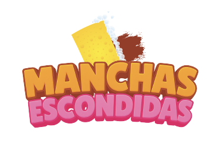

¡El gran día se acerca y es momento de dejar todo listo para la inauguración!
Tienes 6 ventanas por limpiar y el tiempo corre.
¿Cómo jugar?
Desliza la esponja sobre las manchas para limpiar las ventanas.
Puedes utilizar la lupa para revisar los detalles, pero ¡cuidado!, el tiempo sigue corriendo.
Algunas manchas no desaparecerán completamente.
Recuerda: no todo tiene que quedar perfecto para poder avanzar.
¡Completa las seis ventanas antes de que se acabe el tiempo!